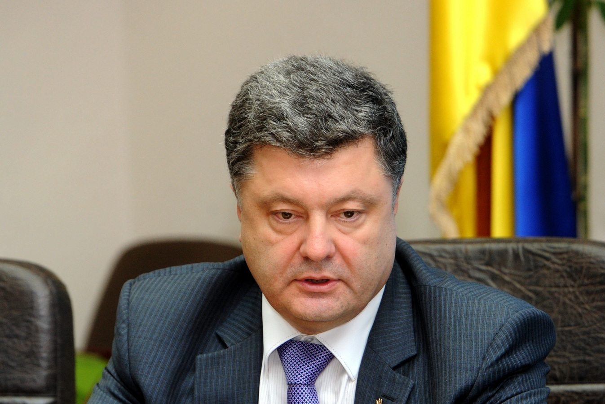
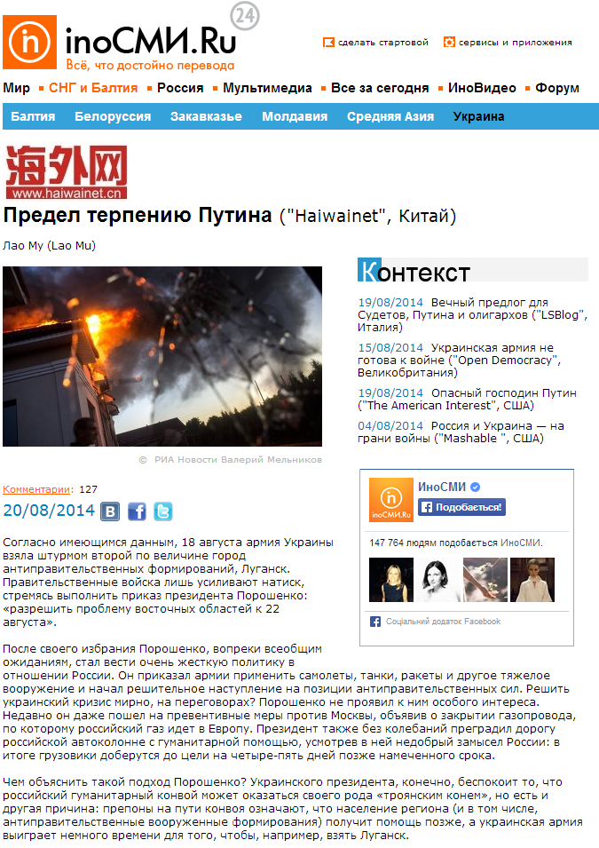

Фейк: Порошенко приказал закончить АТО до 22 августа и перекрыть газ Европе
20 августа крупнейший российский сервис, специализирующийся на переводе иностранных новостей и статей, опубликовал материал китайского сайта haiwainet.cn под названием «Предел терпению Путина», который содержит сразу несколько неправдивых утверждений.
В первом абзаце автор статьи Лао Му утверждает, что Порошенко приказал «разрешить проблему восточных областей к 22 августа», из-за чего правительственные войска усиливают натиск.
На самом деле ни президент Украины, ни кто-либо другой из украинских чиновников не ставил задачи добиться победы над сепаратистами в столь сжатые сроки.Более того, в начале августа командир батальона «Донбасс» Семен Семенченко спрогнозировал, что для освобождения Донецкой и Луганской областей понадобятся два-три месяца.
Во втором абзаце Му пишет: «Недавно он (Порошенко – ред.)даже пошел на превентивные меры против Москвы, объявив о закрытии газопровода, по которому российский газ идет в Европу».
Это также неправда.Украина не прекращала транзит российского газа через свою газотранспортную систему и тратит для прокачки собственный технологический газ.
Более того, по словам министра энергетики Украины Юрия Продана, есть основания полагать, что Россия может вскоре прекратить транзит газа в Европу, обвинив Украину в незаконном отборе газа из трубы.
16 июня Кремль полностью прекратил поставку газа Киеву — с того времени Украина не получает, а лишь прокачивает российский газ через свою территорию.
Posted On: 2014-08-19T21:00:00


Content Date: 2014-08-19
Download Date: 2021-07-16
Document ID: L0C04FFRE